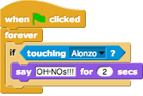
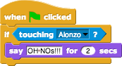

We are going to make a small game of tag in Snap!. Make a second set of four scripts, controlled by a different set of keys, for your other sprite.
We want one of the characters to react if the two characters touch. We can add the following script to the Duck sprite to say OH NOs!!! when it touches Alonzo.

Note: One really important thing to note here is that once we click the green flag, the script above will always be running: notice that it always has a highlighted outline. Compare this to the script below that would only run once when you click the green flag. The functionality above is often called an infinite loop, and can be very helpful when we want something to continue running forever.
